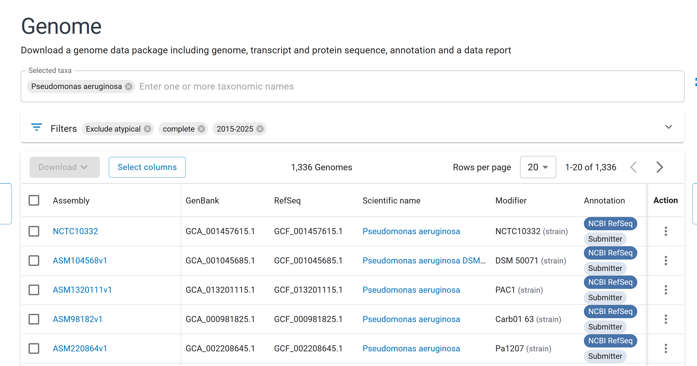
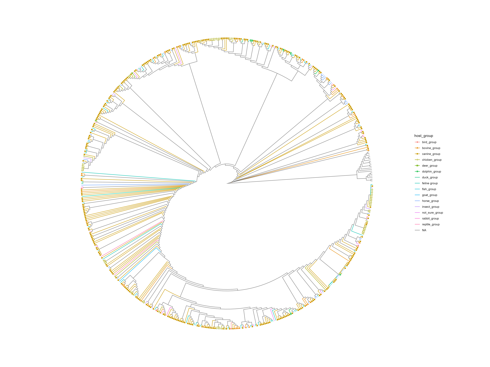

Introduction
Brief overview of the week’s objectives and context.
The objective for this week is to sure up the pipeline and rerun it for the M. bovis and M. smegmata samples.
Methods
Description of stuff I did.
First, I want to fix the code that makes the contig IDs in the outputs of the annotation stage, as for the large groups, there was a lot of extra stuff that needs pruning.
Then, I want to make the pipeline less dependent on hard-coded variables. I think I can create some reuseable variables in a script, and then call that in each script, using source(), like I do for my functions.
I decided to give up on fixing the contig IDs because it was more trouble than it was worth, as the workaround I created works fine, and I do not want to mess up that stage of the pipeline. I am still going to do the source script thing, as I am going to have to manually update each script anyway.
slight problem
right, bad news, mycobacterium smegmatis is not mycobacterium, it got moved to mycolicibacterium. I dont think I can use that. Anyway, Myco was just the set dressing over the methods I wanted to use, the internals are still the same if I look for amino acid catabolism in another species. I asked Claude, and he suggested Pseudomonas, he also told me that comparative genomics studies typically use 10-50 representative genomes, which means I can validly use a lower number, makes some of what I done literally fucking pointless, but hey ho. Anyway, this means that the 46k for Pseudomonas aeruginosa can be cut down to size to compare with the 500 or 300 of the others of Claudes suggestions for environmental. Anyway, out of lack of want to download 46k metadata files, I am now using quality checks:

This gets P. aeruginosa down to a reasonable 1,336. So, I would download all those files, look at quality metrics and then keep the top 20-50, why Aaron did not tell me this, I will never know. Anyway, the hypothesis is still sound, the methods are still sound, its just the genus and a bit of extra pipeline-age, so its all good.
Just going to do all 4 species so I have my bases covered, made new “accession_filterer.R” script to go at front of the new pipeline, does a bunch of stuff I already did in past scripts to download with API, now I have to set it so that the top 50 from each species is taken. once putting the Myco species though the same filters I ended up with 30 and 13 a piece, which is less promising than the pseudomonas species just on numbers alone.
So, I can now use:
checkM completeness (>95%)
sequence length compared to reference (close as possible)
N50 and lower numbers of contigs (high / low as possible)
to filter the accessions that come back.
Right, so in the end, I have a list of 50 each for P. aeroginosus and P. putida. The filter I used was:
filter(completeness >= 95 & contamination <= 5 & number_of_contigs < 4) |> arrange(number_of_contigs, desc(contig_n50), desc(length_comparison))
Which limits the list to those withing acceptable checkm scores and low number of contigs, then orders by 1. low contig number, 2. high N50, 3. high length (this prioritises length, even though the ideal would be close to 1, might need to “abs()” it.
problem solved
I decided to pull the metadata for the 44k samples for P. aeruginosa, take a bit of a look at what I was dealing with. I then had a meeting with Aaron, by the end of this week I should:
- Filter the metadata so I have a list of just animal-associated hosts, for which I can then pull the genomic fastas
- plot those on a phylogenetic tree using GTDBTK
I finished filtering the accession list by creating a unique lookup table that placed hosts in groups, I should error-check the work there, because it was very manual, but I needed to press forward for time. Then, after a bit of trial and error editing the “fastafile_getter.R” and the “fasta_getter_runner.sh” scripts, I sent the job off, and it started downloading the fastas in the list.
I have identified the scripts that I can rip GTDB-TK code from from last years project, they are in the Wolbachia subproj section. After all those finished running, I ran “genomic_file_extractor.R” to extract all the genomic fastas. I then used code from last year in the new “gtdbtk_runner.sh”, to run GTDB-Tk overnight. Of note, I added the argument “--skip_gtdb_refs”
After the gtdb-tk finished running, I downloaded the files output to my machine, cut the outgroup out of the tree using Dendroscope and spent a good amount of time trying and failing to get a useable tree. It was a lot of cobbling together from old code and online code, I am not sure what I am doing with this, why is this so confusing for me?
I got this:

It has its problems, the main ones are:
- Because I used p__Acinobacter as the outgroup, it is rooted all the way back to d__Bacteria, not good, means I have to remove branch length
- To fix: rerun GTDBTK and use that weird method where I manually pass in an outgroup (as like P putida or florescence or something more closely related)
- There are too many groups and accessions, the tree is unreadable
- merge groups or cut small groups or just do inside mammalia
- use quality metrics file I already set up to filter the accessions I have to just the high quality ones
- I am not sure what I am actually trying to visualise, I am pretty sure I am trying to see if any of the clades of the tree match to a group, which would suggest host adaptation
- Ask Aaron what I am trying to see with the tree
- The information online, steps to follow, whatever word that is (instructions?) is very confusing, I am not sure what I am really doing
- Ask Aaron the kind of things he would want to see in a good tree
- Also, just take a really good read over the old trees, maybe try actually running some of the old code to understand it better
What is even the hypothesis of this dissertation anymore?
There is a lot of dog. Maybe something like “I hypothesise that P. aeruginosa samples found internal in canine hosts, compared to those found exturnally will have significantly more enrichment for KEGG pathways involved in amino acid catabolism, due to the higher likelihood of encountering rogue proteins in internal systems, like the gut”
I messaged Aaron to ask for a meeting to figure some stuff out next week. Other than that, I just looked down the main scripts of the pipeline leading up to EggNOG-mapper and made some small tweaks so that I can run the P. aeruginosa accessions I currently have next week. This pretty much only involved changing file names, a good reason for why parameterising that stuff is important, but I have to consider time, or the lack thereof.
I ran the 539 accessions through prodigal, manually moved the “combined_pseudomonas_proteins.faa” file to scratch so it can be eggnogmapper searched. They successfully did that in under an hour. Now going through annotator.
Results
Key findings, observations, and data from this week’s work.
Conclusion
Summary of outcomes, implications, and next steps.
Scientific Papers
Relevant literature read this week.